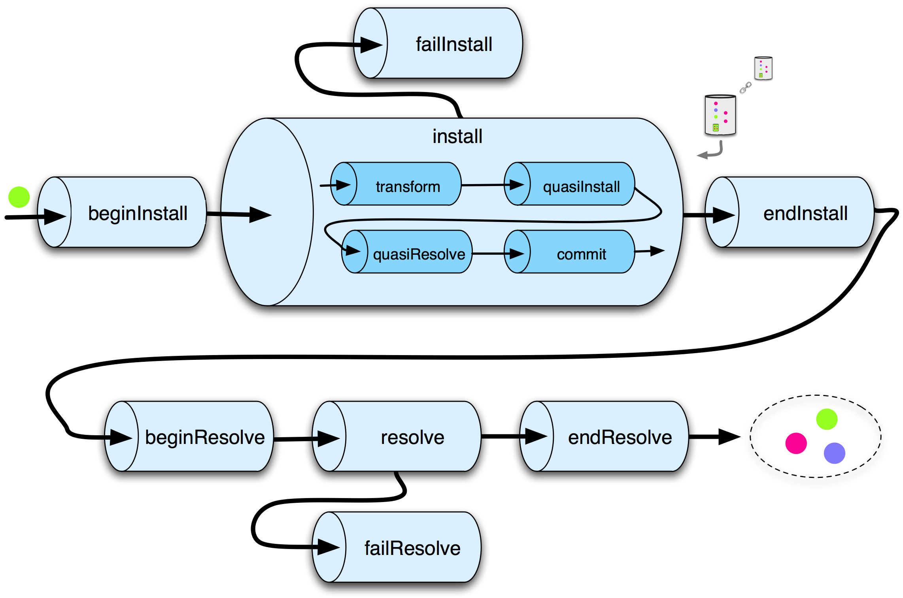

| Pipeline | ||
|---|---|---|
|
|
|
|
| Scoping | Repositories | |
Artifacts are deployed into Virgo using a deployment pipeline consisting of several pipeline stages some of which have pipelines nested inside them as shown in the figure below.

The pipeline, and each pipeline stage, accepts a tree of install artifacts as input and outputs a possibly modified tree. The deployment pipeline is constructed by the <tt>Plumber</tt> class.
Many of the interesting modifications to the tree are performed by the transform stage which uses the whiteboard pattern to drive all services of a Transformer type in order of service ranking. A number of standard Transformer services are defined in the Spring context file <tt>deployer-context.xml</tt> in the kernel's deployer bundle. Some interesting examples of standard Transformers are:
The quasi framework is an abstraction of the Equinox State and is used in auto-provisioning missing dependencies during deployment. The quasiInstall stage installs the bundles in the input tree into an instance of the quasi framework. The quasiResolve stage attempts to resolve these bundles and auto-provision any missing dependencies from the Virgo repository by installing them in the quasi framework instance. The commit stage attempts to install the bundles in the input tree, along with any auto-provisioned bundles, into the OSGi framework.
There are two approaches to handling exceptions thrown by a pipeline stage. In general, unexpected exceptions are allowed to percolate upward and result in diagnostics and a failed deployment. However, certain expected exceptions, such as failure to resolve the dependencies of the install artifact tree, need to be handled more gracefully. In these cases, a
compensating pipeline stage is defined which drives a
compensation stage if an exception is thrown. failInstall and failResolve in the figure above are examples of compensation stages.
|
|

|
|
| Scoping | Repositories |